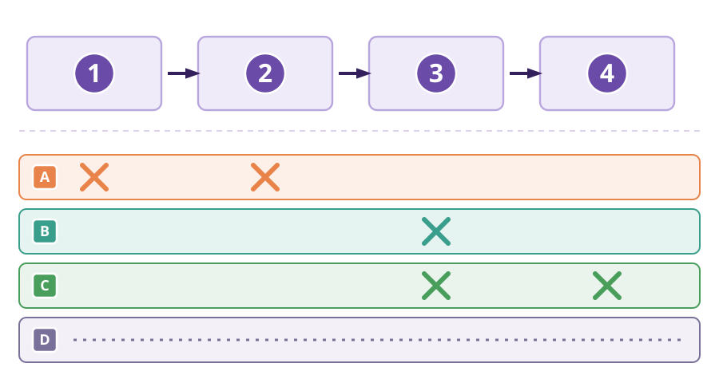
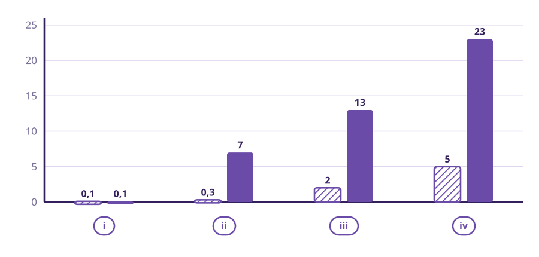

Escriu el que penses ara: no es corregeix. És l'última sessió de la unitat, i al final la compararàs amb el que vas escriure el primer dia.
2. Dels que has escrit, n'hi ha algun que també protegeixi d'infeccions?
3. Aquesta va de tothom, no de tu: d'on treu la gent de la vostra edat el que sap sobre aquests temes? Marca les dues que et sembla que són més freqüents.
Quan sents una afirmació, no cal creure-se-la ni rebutjar-la de cop. N'hi ha prou de fer-se tres preguntes: qui ho diu? · quines dades hi posa? · es pot comprovar, i com?
📌 Exemple ja resolt. Afirmació: «beure aigua amb llimona en dejú crema el greix».
Qui ho diu? Un compte de xarxes que ven un pla d'aliments. Hi guanya diners.
Quines dades hi posa? Cap número. Només diu que a ell li va funcionar. Això és una anècdota: un cas sol.
Es pot comprovar? Sí. Es podria agafar molta gent, que la meitat begués aigua amb llimona i l'altra meitat aigua sola, i mirar al cap d'uns mesos si hi ha diferència.
Conclusió: de moment no ho sabem, perquè ningú no ho ha comprovat així. I «no ho sabem» és una resposta bona.
🎥 El vídeo que acabeu de veure, en fred. Ho teniu aquí escrit perquè pugueu treballar-hi sense haver de recordar-ho de memòria. Es mira l'afirmació, no la persona.
Qui el publica: un compte de xarxes socials sobre «salut hormonal natural», amb molts seguidors. No hi consta cap titulació sanitària.
Què hi ven: al mateix perfil hi ha un programa de suplements i assessorament de pagament per «recuperar la fertilitat després de les hormones».
Què hi diu, exactament: «Els anticonceptius et fan infèrtil per sempre.»
Quines proves hi posa: tres testimonis de dones que expliquen que van trigar a quedar-se embarassades després de deixar la píndola. Cap xifra, cap estudi, i cap grup amb qui comparar.
Quin mecanisme proposa: diu que les hormones «s'acumulen» al cos i «l'embruten». No explica per quin camí això faria malbé res.
4. Omple les tres caselles, com a l'exemple.
| Pregunta | La teva resposta |
|---|---|
| Qui ho diu? | |
| Quines dades hi posa? | |
| Es pot comprovar? Com? |
💡 Totes dues parlen de persones de veritat. La diferència és quantes n'hi ha i si es comparen amb algú.
5. Quina de les dues és una prova i no una anècdota?
6. Li preguntes a una IA i et dona una resposta i una font. Vas a buscar la font i existeix de debò.
Perquè hi hagi un embaràs han de passar quatre coses, i en aquest ordre:
① El cervell dona l'ordre d'ovular.
② Surt l'òvul de l'ovari.
③ L'òvul i l'espermatozoide es troben.
④ L'embrió s'enganxa a la paret de l'úter.
Si en falla una sola, no hi ha embaràs. Això és el més important d'avui.
Cada família de mètodes talla la cadena en un punt diferent:
• Els hormonals (píndola, pegat, implant) donen hormones al cos. Fan que no arribi l'ordre d'ovular. Tallen al principi.
• Els de barrera (el preservatiu) no deixen que els fluids es toquin. Tallen al mig.
• El DIU de coure va dins de l'úter. Fa un ambient on els espermatozoides no aguanten. Talla al final.
I el mètode del calendari no talla res. No fa res al cos. Només intenta endevinar quins dies són fèrtils. A la sessió 2, amb el cicle de la Laia, ja vas veure que aquests dies no cauen sempre igual.

7. Amb el grup, poseu cada targeta a la seva columna. La graella ja et dona tres respostes, una de cada columna: fixa-t'hi per completar les altres.
A l'última columna respon amb molt, bastant o gens, i digues cada quant — per exemple: «molt: cada vegada», «gens: dura anys».
| Mètode | A quina columna va? | Depèn de fer-ho bé cada vegada? |
|---|---|---|
| Preservatiu extern | De barrera (exemple) | |
| Preservatiu intern | ||
| Píndola combinada | Hormonal (exemple) | |
| Pegat transdèrmic | ||
| Implant subcutani | ||
| Píndola de l'endemà | ||
| DIU de coure | Actua dins de l'úter (exemple) | |
| Mètode del calendari |
💡 Torna a llegir, targeta per targeta, què li fa al cos. N'hi ha una que no li fa res de res: només mira el calendari.
Els patògens (els microbis que fan agafar una infecció) viatgen amb els fluids del cos.
El preservatiu és l'únic mètode que no deixa que els fluids es toquin. Per això atura dues coses alhora: els gàmetes i els patògens.
Els hormonals i el DIU eviten l'embaràs, però els fluids es toquen igual. Per això no protegeixen d'ITS.
Això que has de recordar: els metges recomanen la doble protecció — preservatiu i un altre mètode.
9. Ara que ja saps per quina raó, digues quins mètodes protegeixen també d'ITS.
| Mètode | Protegeix també d'ITS? (sí / no) |
|---|---|
| Preservatiu extern | |
| Preservatiu intern | |
| Píndola combinada | |
| Pegat transdèrmic | |
| Implant subcutani | |
| Píndola de l'endemà | |
| DIU de coure | |
| Mètode del calendari |
💡 Torna a la caixa de dalt: què és el que porta els patògens d'una persona a una altra? I quin mètode és l'únic que ho atura?
10. Per quina raó el preservatiu protegeix també d'ITS?
La píndola de l'endemà. És una pastilla que es pren un sol cop, després d'una relació sense protecció, i com abans millor. El que fa és retardar o impedir que surti l'òvul aquells dies: per tant fa el mateix que la píndola de cada dia, però un sol cop. I una cosa important: si l'embrió ja s'ha implantat a l'úter, la píndola de l'endemà no hi fa res. No interromp un embaràs que ja ha començat.
💡 Totes dues coses impedirien un embaràs. Però només una és la que fa realment la píndola.
11. La píndola fa que…
💡 Dues coses que ja saps: el calendari no fa res al cos, i els dies fèrtils no cauen sempre al mateix dia. Ajunta-les.
12. Una persona té un cicle que li canvia de mes a mes i fa servir el mètode del calendari. A ella, el mètode li funcionarà…

13. Mirant la figura F2: per quina raó el mètode del calendari falla molt més a la vida real que sobre el paper? Escriu-ho amb els quatre passos de sempre, una línia cadascun.
👀 OBSERVO
Mira les dues barres de la (iv). Quins dos números hi ha?
❓ EM PREGUNTO
Per quina raó hi ha tanta diferència, si el mètode és el mateix?
🔗 CONNECTO
Connecta-ho amb el cicle de la Laia de la sessió 2.
💡 DEDUEIXO
Per tant, de què depèn que aquest mètode funcioni?
El vídeo diu: «Els anticonceptius et fan infèrtil per sempre.»
Mirem si s'aguanta.
Què se sap de debò: quan algú deixa un anticonceptiu hormonal, el cicle torna. S'ha seguit molta gent durant anys i no s'ha trobat que la fertilitat quedi tocada.
Per quina raó el vídeo no s'aguanta? Per tres coses:
(a) No diu com passaria. No explica cap mecanisme.
(b) No dona dades. Només casos que algú explica.
(c) Confon dues coses que passen seguides amb una cosa que causa l'altra.
Un exemple de (c): algú deixa la píndola als 34 anys. Després triga a tenir un embaràs. Però la píndola no és l'única cosa que ha canviat: també ha passat el temps, i ara té més anys.
Com es pren una decisió sobre el propi cos?
No per por. No perquè una cosa estigui de moda. Es miren tres coses:
(1) Què se sap de debò, amb proves.
(2) Quant funciona el mètode a la vida real, no sobre el paper.
(3) Com és la vida de cada persona, que no és igual per a tothom.
I qui decideix? La persona, parlant-ne amb algú de sanitat. No una xarxa social, i tampoc una classe de biologia. El que fa la biologia és explicar-te com funciona, perquè entenguis el que et diguin.
Com s'escriu cada resposta. Tres frases, sempre en el mateix ordre. Frase 1: la resposta, directa. Frase 2: què passa al cos. Frase 3: d'on ho heu tret. I una regla: no es jutja ningú — no s'escriu «s'hauria de» ni «està malament», s'escriu «passa això» i «per aquesta raó».
Pregunta 1. «Si es fa servir el preservatiu, cal fer servir res més?»
Frase 1 — la resposta:
Frase 2 — què passa al cos:
Frase 3 — encercla d'on ho heu tret:
Pregunta 2. «La píndola de l'endemà, és un avortament?»
Frase 1 — la resposta:
Frase 2 — què passa al cos:
Frase 3 — encercla d'on ho heu tret:
Pregunta 3. «És veritat que prendre anticonceptius molt de temps fa que després costi més tenir fills?»
Frase 1 — la resposta:
Frase 2 — què passa al cos:
Frase 3 — encercla d'on ho heu tret: